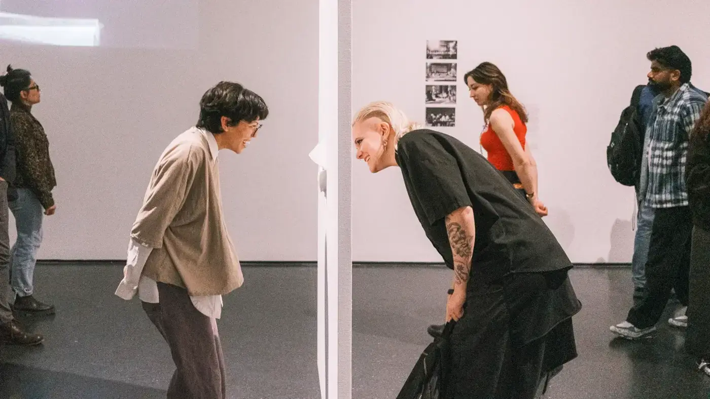

Studio
Rumpus (n.) a noisy commotion. We make it for festivals, labels and small brands, from a print room on Rua do Almada.

(01)What we believe
That loud is not the same as big. A festival with no budget, a label with no shop window and an atelier with nine coats all deserve work that stops people in the street. We make it with paper, ink and a camera, and we make it ourselves.
(02)How we work
Everything starts on the wall, not the screen: prints, contact sheets, swatches, pinned up and moved around until the idea holds. Then it goes to the press. We shoot in our own studio and print in our own print room, so the people who had the idea are the people pulling the sheets.
(03)What we do
- Campaign
- Art direction
- Photography
- Paste-ups
- Social
- Identity
- Naming
- Visual identity
- Sleeves & packaging
- Signage
- Risograph
- Screen print
- Books & editorial
- Posters
- Film
- Campaign film
- Motion
- Studio shoots
- Edit & grade
People
Presses
(04)Clients
Salto Livre, Riverbend Records, Ochre Editions, Piscina Press, Casa Oito, Teatro Rivoli, Mercado do Bolhão, Douro Wine Week, Rua Nova, Serralves Shop, Casa da Música, Porto Design Biennale
(05)Collaborators
Studio Ponte (photography), Gráfica Almada (paper), Lumen Grade (colour), Sara Couto (copy)
(06)Press
It's Nice That, The Brand Identity, Eye on Design, Riso Club Journal, Público P3
(07)Jobs
We're a small room and we like it that way. No open roles right now, but we always want to meet printers, photographers and designers who get their hands dirty. Send work to ola@rumpus.pt.
(08)When
Tuesday to Saturday, ten to seven. Same time as London, one hour behind Paris, five ahead of New York. The presses rest on Sundays and Mondays; so do we.